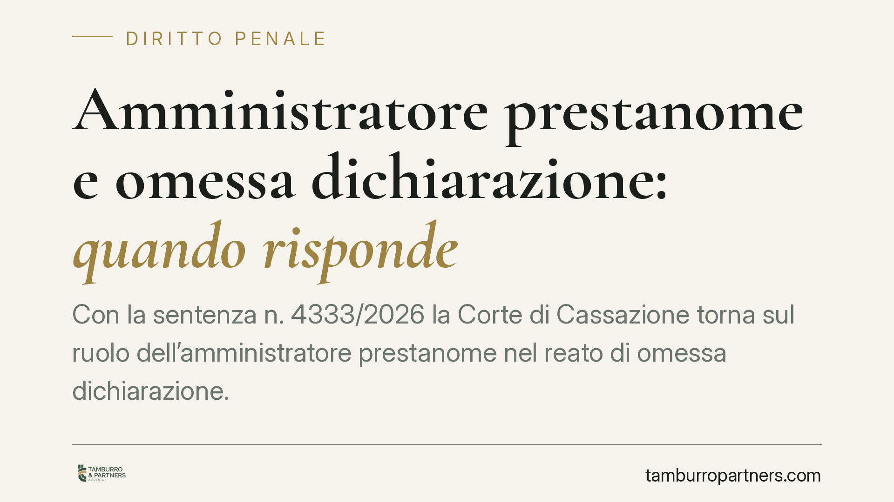

Amministratore prestanome e omessa dichiarazione: quando risponde
Con la sentenza n. 4333/2026 la Corte di Cassazione torna sul ruolo dell'amministratore prestanome nel reato di omessa dichiarazione. La figura formale può rispondere come autore, ma la condanna esige la prova specifica della volontà di evadere: l'omissione, da sola, non basta. Un chiarimento che incide sul rischio penale di chi accetta cariche societarie senza gestire davvero l'impresa.

Il caso e il principio
La vicenda riguarda l'amministratore "di diritto" di una società, cioè il soggetto che figura formalmente come legale rappresentante ma che, nei fatti, non esercita alcuna gestione effettiva. È la classica posizione del cosiddetto prestanome: colui che presta il proprio nome, mentre l'attività reale è condotta da un amministratore di fatto rimasto dietro le quinte.
La Cassazione ribadisce due punti che vanno tenuti distinti. Primo: sul piano formale, chi riveste la carica di amministratore risponde come autore del reato di omessa dichiarazione, perché su di lui grava l'obbligo dichiarativo. Secondo: la responsabilità penale non è automatica. Per condannare serve la prova del dolo specifico, ossia della coscienza e volontà di non presentare la dichiarazione allo scopo di evadere le imposte. E questa prova non può essere desunta dalla sola mancata presentazione della dichiarazione.
Inquadramento normativo
Il reato è previsto dall'art. 5 del D.lgs. 74/2000, che punisce chi, al fine di evadere le imposte sui redditi o sul valore aggiunto, non presenta la dichiarazione annuale quando l'imposta evasa supera la soglia di legge. La norma richiede espressamente un fine di evasione: non è sufficiente la condotta omissiva in sé, occorre che essa sia sorretta da quella specifica finalità.
Sul versante della responsabilità del prestanome, entra in gioco l'art. 40, comma 2, del codice penale, secondo cui non impedire un evento che si ha l'obbligo giuridico di impedire equivale a cagionarlo. L'amministratore formale ha una posizione di garanzia: dovrebbe vigilare sulla gestione. Tuttavia, la giurisprudenza distingue tra reati omissivi propri e reati che presuppongono un elemento psicologico rafforzato. Nel caso dell'omessa dichiarazione, il dolo specifico impone un accertamento concreto: il prestanome deve aver avuto consapevolezza dell'obbligo e aver aderito, almeno in forma di dolo eventuale, alla finalità evasiva.
Cosa cambia in concreto
La pronuncia ha ricadute pratiche rilevanti per chi accetta cariche societarie senza gestire l'impresa.
Da un lato, non offre uno scudo: assumere la carica per compiacere terzi non azzera il rischio penale. La posizione di garanzia resta e, in presenza di elementi che dimostrino consapevolezza, la condanna è possibile.
Dall'altro, alza l'asticella probatoria a carico dell'accusa. Non è più sufficiente contestare la carica e l'omissione: il pubblico ministero deve dimostrare che il prestanome sapeva dell'obbligo dichiarativo e ha accettato il rischio dell'evasione. La totale estraneità alla gestione, l'assenza di deleghe operative e la mancanza di accesso alle scritture contabili diventano elementi difensivi concreti.
Per l'amministratore di fatto, invece, il quadro non muta: chi gestisce realmente la società risponde in prima persona, a prescindere dalla titolarità formale della carica.
Cosa fare in concreto
- Valutate prima di firmare. Non accettate cariche di amministratore in società che non gestirete direttamente. La carica formale comporta obblighi reali e un rischio penale che non svanisce con l'assenza dalla gestione.
- Documentate la vostra posizione. Se già ricoprite un ruolo formale, conservate ogni evidenza dell'effettivo assetto gestorio: deleghe, comunicazioni, verbali che indichino chi decide davvero.
- Verificate gli adempimenti fiscali. Chiedete conto delle dichiarazioni presentate. L'ignoranza colpevole non è sempre una difesa; la vigilanza attiva riduce l'esposizione.
- Formalizzate le dimissioni tempestivamente se scoprite di essere un mero prestanome. Il momento in cui vi attivate può incidere sulla valutazione del dolo.
- Rivolgetevi a un difensore in fase preliminare. L'accertamento del dolo specifico si gioca sui documenti e sulle dichiarazioni: impostare correttamente la strategia sin dall'indagine è determinante.
La sentenza conferma un orientamento equilibrato: la firma su un atto societario non è un lasciapassare verso la condanna, ma nemmeno un rifugio. Ciò che conta è la ricostruzione concreta di ruoli, consapevolezza e finalità.
---
*Contributo informativo a cura di Tamburro & Partners - Avv. Giuseppe Tamburro. Non costituisce parere legale.*
Ogni condominio ha una storia a sé.
Se gestisci un'amministrazione e vuoi un confronto su una specifica questione condominiale, scrivi allo studio. Ti rispondiamo entro un giorno lavorativo.